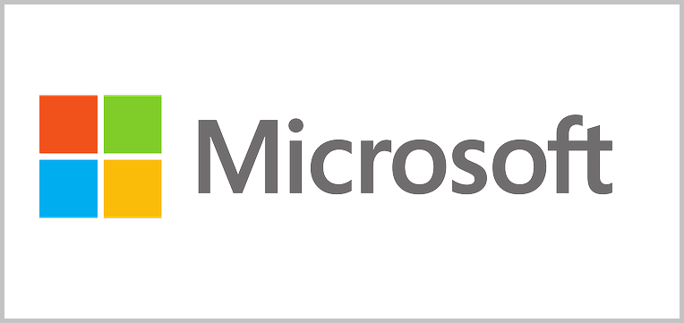

Browser Wars
The internet during the 1900’s was mainly for academics and research, scientists and there wasn't much that ordinary people could do on it. It was very useful to those who were using it, one of them was a student at University of Illinois named Marc Anderson.
He and his programming colleges were working on making the web easier to use, which resulted in “Mosaic”, the world’s first graphical web browser.
Mosaic and the rise of browsers
Mosaic was posted online and was freely downloadable, it became really popular and had millions of users. Jim Clark who was the founder of Silicon Graphics was interested in Mosaic and decided to bet a third of his networth to the project and contacted Marc Anderson who had graduated from college. Jim Clark and Marc Anderson had started a new software company and recruited people to build a team.
At the time though, Microsoft and Bill Gates were the most powerful in the technology field, and were on the verge of becoming the world’s high tech emperor; but Jim Clark and his men were not going to let that happen so easily.
Netscape
After Mosaic, the team were working to build a new browser based on that to turn the internet into the future on commerce and communication called ‘Netscape’. Netscape was finally released and was a huge success with millions of people downloading it, and microsoft being shocked.
Bill Gates realized how important the web is and found netscape as a new competitor, this was the beginning of the browser war
Microsoft vs Netscape
Netscape hired a lawyer named “Gary Reback” who immediately recognized the threats that the company was facing. There was a meeting between the two companies in which netscape claimed to have been threatened by microsoft, and were offered a million dollars to sell netscape and have unlimited access to all their technology, or else microsoft will copy everything from them. If this was true as claimed by netscape, then microsoft had broken the law(american antitrust laws). Netscape filed a lawsuit against microsoft. They were also making a lot of money that was being made by Netscape and they were skyrocketing. They had so much success that they were looking to take over microsoft and believed that microsoft technology was now on a downfall.
Microsoft soon responded back as they released their very own web browser: Internet Explorer. Microsoft fightback was successful and kept doing so by monitoring netscape and releasing versions after version to have advantage over netscape. Along with Gates’s men working hard, he also had salesmen whose job was to have people buy their web browser than Netscape, and put Netscape out of business. The salesmen made sure to have PC makers install internet explorers over netscape. Due to financial advantage, internet explorer was free with Microsoft which made their shares in the market more that netscape. Internet Explorer had won the battle as they were more successful. For Netscape it was all downhill from there and was later acquired by the company AOL.